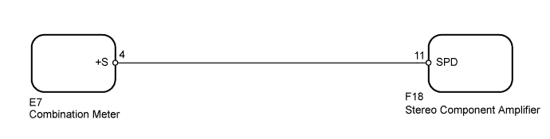
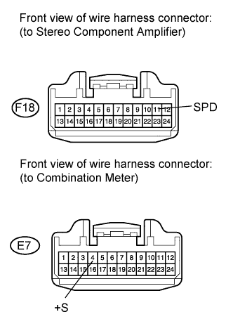

AUDIO AND VISUAL SYSTEM (w/ Multi-display) > Vehicle Speed Signal Circuit between Stereo Component Amplifier and Combination Meter |

| 1.CHECK OPERATION OF SPEEDOMETER |
Drive the vehicle and check if the function of the speedometer in the combination meter is normal.
|
| ||||
| OK | |
| 2.CHECK HARNESS AND CONNECTOR (STEREO COMPONENT AMPLIFIER - COMBINATION METER) |
 |
Disconnect the F18 amplifier connector.
Disconnect the E7 meter connector.
Measure the resistance according to the value(s) in the table below.
| Tester Connection | Condition | Specified Condition |
| F18-11 (SPD) - E7-4 (+S) | Always | Below 1 Ω |
| F18-11 (SPD) - Body ground | Always | 10 kΩ or higher |
|
| ||||
| OK | ||
| ||